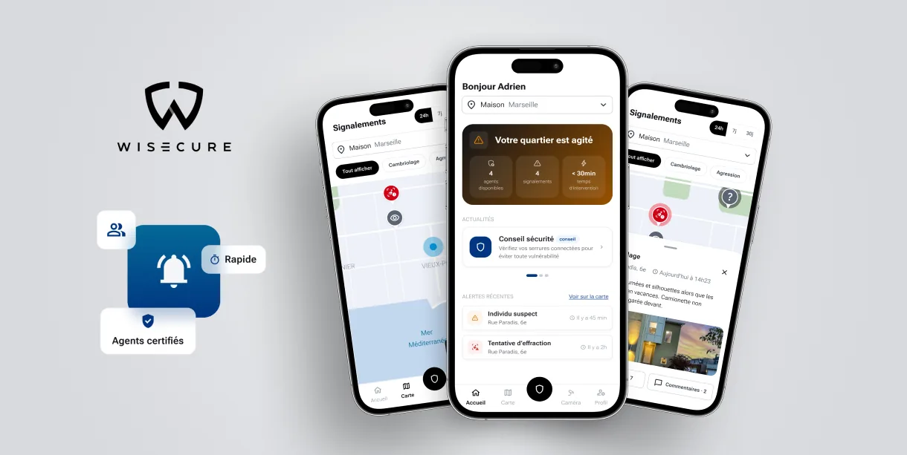
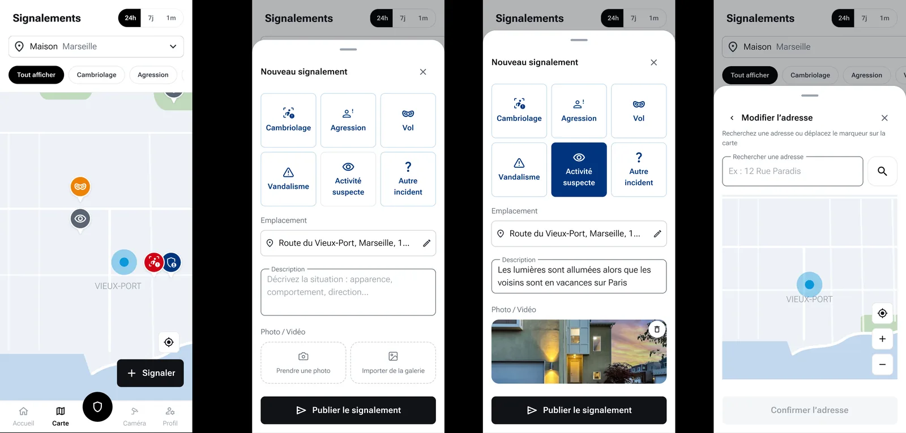
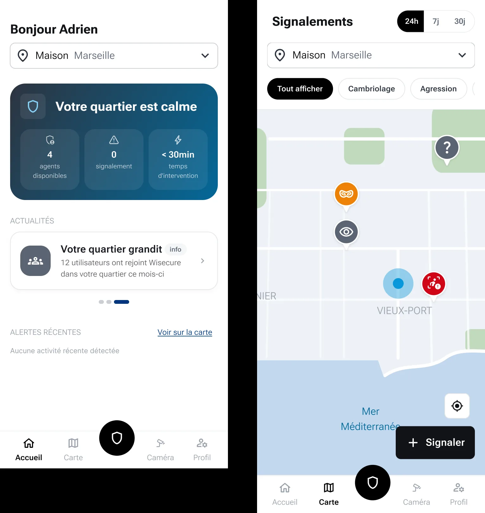
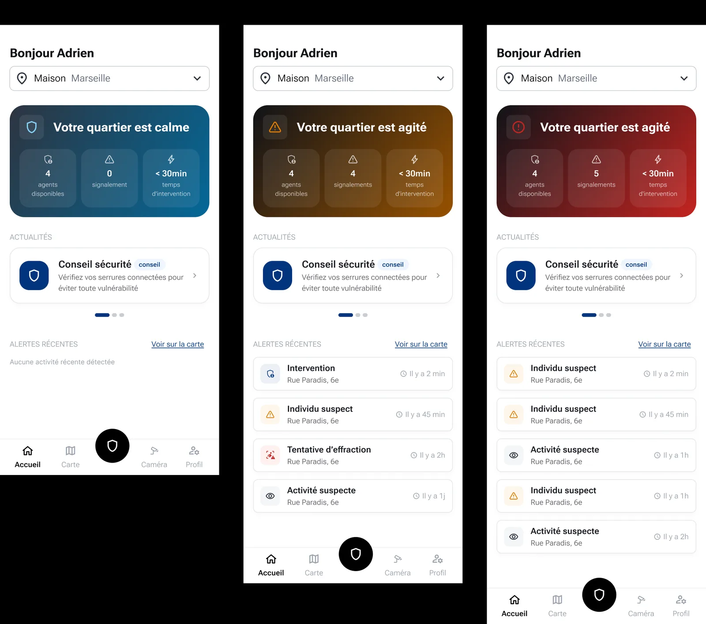

2026 · 3 months
A neighborhood-watch app built to stay fast under pressure
Neighborhood-safety mobile app

The challenge
Wisecure connects neighbors and certified security agents to report and track incidents in real time — a community-based alternative to traditional surveillance systems.
The problem to solve: in a watch or emergency situation, every second counts. The reporting flow needed to stay clear and fast to use even under stress, while still giving a reassuring, at-a-glance view of neighborhood activity day to day.
My job: design the mobile experience end to end — geolocated incident reporting, neighborhood dashboard, connection with certified agents — from UX framing to final interface.
Methodology
Understand the use case
Designing for emergencies, not comfort
A safety app can't be designed like a typical app: it has to stay usable when the person's attention is on the incident, not the interface. I prioritized readability, quick-to-reach actions, and the fewest possible steps to report an incident.
Prioritize under constraint
Redesigning a live product, in the right order
The app was already live: this wasn't a 0→1 build, but a redesign of the journey and ergonomics without breaking what already worked. I first mapped the impact of the redesign before prioritizing the work: design system and brand guidelines sign-off first, then onboarding and account creation (new screens, new branding), then the neighborhood activity feed and home screen, then the incident map and the town-hall space (the biggest piece of work), then address management, the full town-hall space, and finally anonymous mode.
That prioritization also accounted for the team: 3 developers (1 web for the map and the town-hall space, 2 mobile), one of whom would only be available for part of the mission. I ordered the work so that person tackled the highest-impact, most self-contained pieces first, before moving to smaller features more tightly coupled to the rest of the app — so the lead mobile developer could pick up cleanly afterward.
Geolocated reporting
A clear map to place every alert
I designed the incident map as the main entry point: immediate localization of nearby incidents, report creation in a few steps, and a visible status so people following an alert stay reassured.
One key constraint: keeping an anonymous mode so people could explore the app and see if it's for them without being forced to sign up on first open. Events are geolocated on two levels: incidents show up around the person's location, and alert notifications go out by neighborhood (tied to the declared home address, changeable at any time).

The flow for creating a report on the map, designed to stay simple to use under stress. Act in an emergency
One gesture to call for help
The app's priority action — requesting an intervention in an immediate-danger situation — is carried by a single button: black, raised, with a shield icon, placed centrally throughout the journey. The aim is to make it the immediate reflex in an emergency: one recognizable action, always in the same place.

The intervention-request button: a single, recognizable action, central throughout the journey. Reassure day to day
A readable neighborhood dashboard
Outside of emergencies, the app also had to build everyday trust: neighborhood stats, certified agents highlighted, and quick access to key features from the home screen. The dashboard reflects ongoing activity through a simple visual status (calm, active, danger), built from active reports.

Neighborhood statuses (calm, active, danger), built from active reports.
Results
- Simplified, fast-to-use reporting flow
- Clear interface under stress
- End-to-end experience, from research to design system
- Redesign prioritized around technical team availability (3 developers, one part-time), to avoid blocking dependencies
- Anonymous mode and per-neighborhood geolocated notifications, to avoid losing new users at sign-up